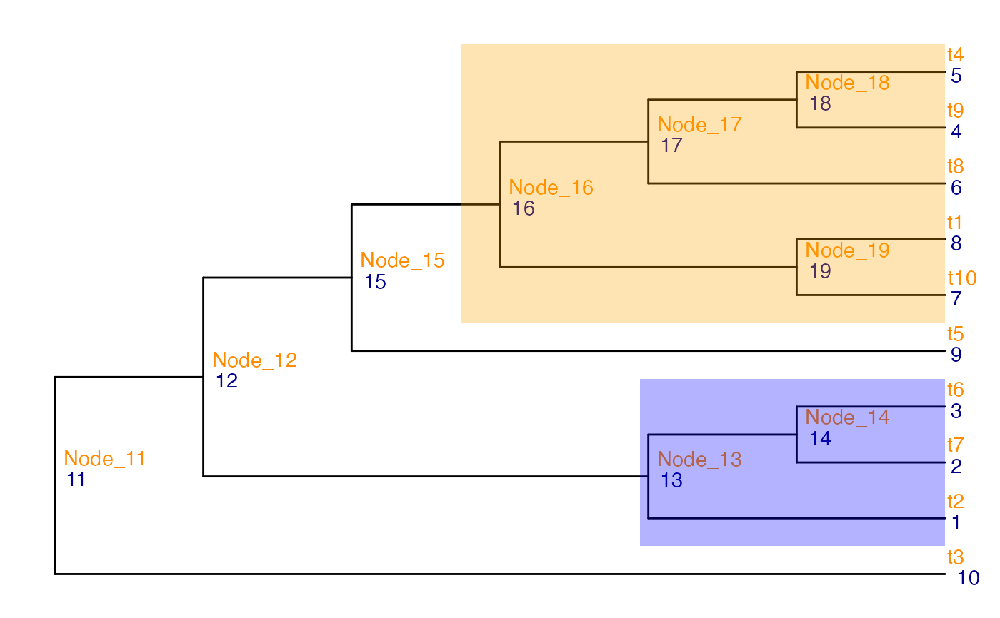

Search for the target level of the tree via a specified score. The score value needs to be provided for each node of the tree.
Usage
getLevel(
tree,
score_data,
drop,
score_column,
node_column,
get_max,
parent_first = TRUE,
message = FALSE
)Arguments
- tree
A
phyloobject.- score_data
A
data.frameproviding scores for all nodes in the tree. The data frame should have at least 2 columns, one with information about nodes (the node number) and the other with the score for each node.- drop
A logical expression indicating elements or rows to keep. Missing values are taken as
FALSE.- score_column
The name of the column of
score_datathat contains the original scores of the nodes.- node_column
The name of the column of
score_datathat contains the node numbers.- get_max
A logical scalar. If
TRUE, search for nodes that has higher score value than its descendants; otherwise, search for nodes that has lower score value than its descendants.- parent_first
A logical scalar. If
TRUE, the parent node is selected if tied values occur on the parent node and some of the children nodes.- message
A logical scalar indicating whether progress messages should be printed.
Value
A data.frame similar to score_data but with an
additional column named keep indicating which nodes to retain.
Examples
suppressPackageStartupMessages({
library(TreeSummarizedExperiment)
library(ggtree)
})
data(tinyTree)
ggtree(tinyTree, branch.length = "none") +
geom_text2(aes(label = node), color = "darkblue",
hjust = -0.5, vjust = 0.7) +
geom_text2(aes(label = label), color = "darkorange",
hjust = -0.1, vjust = -0.7) +
geom_hilight(node = 13, fill = "blue", alpha = 0.3) +
geom_hilight(node = 16, fill = "orange", alpha = 0.3)

## Generate score for each node
pv <- rep(0.1, 19)
pv[c(16, 13, 17)] <- c(0.01, 0.05, 0.005)
out <- data.frame(node = 1:19, pvalue = pv)
## Search nodes
final <- getLevel(tree = tinyTree,
score_data = out,
drop = pvalue > 0.05,
score_column = "pvalue",
node_column = "node",
get_max = FALSE,
parent_first = TRUE,
message = FALSE)
## Nodes to keep
final$node[final$keep]
#> [1] 13 17